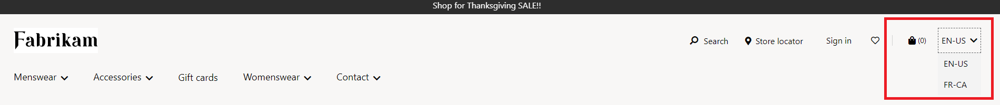

Siteauswahlmodul
Important
Dynamics 365 Retail ist jetzt Dynamics 365 Commerce und bietet umfassende Handelsfunktionen für alle Kanäle – von E-Commerce über Shops bis hin zu Callcentern. Weitere Informationen zu diesen Änderungen finden Sie unter Microsoft Dynamics 365 Commerce.
Dieses Thema enthält das Siteauswahlmodul und es wird beschrieben, wie Siteseiten in Microsoft Dynamics 365 Commerce hinzugefügt werden.
Übersicht
Wenn ein Unternehmen unterschiedliche Websites in verschiedenen Märkten, Regionen und Gebiete hat, benötigen Websitebenutzer eine einfache Möglichkeit, zwischen Websites zu wechseln und ihre bevorzugte Einkaufsseite auszuwählen. Um diesem Szenario gerecht zu werden, können Benutzer mit dem Site-Auswahlmodul mehrere Sites durchsuchen.
Das Site-Auswahlmodul muss mit der Liste der Sites (Märkte, Regionen oder Gebietsschemas) konfiguriert sein, die Site-Benutzer durchsuchen können.
Note
Das Siteauswahl-Modul ist in Dynamics 365 Commerce 10.0.14 Release verfügbar.
Die folgende Abbildung zeigt ein Beispiel für ein Site-Auswahlmodul, das in der Kopfzeile einer Site-Seite enthalten ist.

Eigenschaften des Siteauswahlmoduls
| Eigenschaftenname | Wert | Beschreibung |
|---|---|---|
| Überschrift | Text | Die Überschrift für das Modul. |
| Websiteoptionen | Name, Bild, URL | Diese Eigenschaft gibt einen Namen, einen Link zur Homepage der Site und ein optionales Bild für jede Site an, die im Modul enthalten ist. Das Bild kann eine Flagge oder eine Darstellung eines Marktes, einer Region oder eines Gebietsschemas sein. |
Hinzufügen eines Siteauswahlmoduls zu einer Seite
Das Site-Auswahlmodul kann dem Header-Modul unter dem Site-Auswahl-Slot hinzugefügt werden. Nach dem Hinzufügen können Sie die Modulüberschrift und die Site-Optionen definieren.